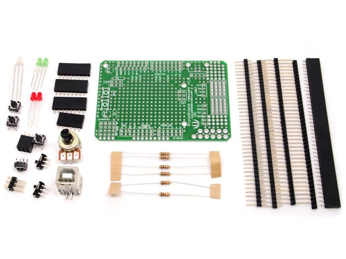
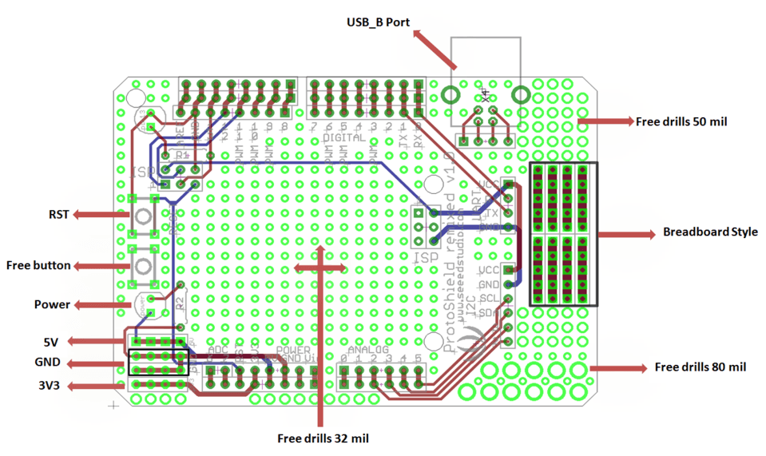
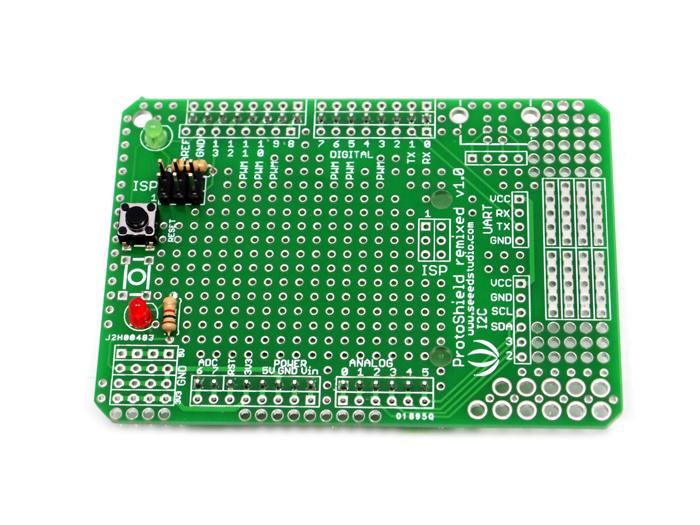
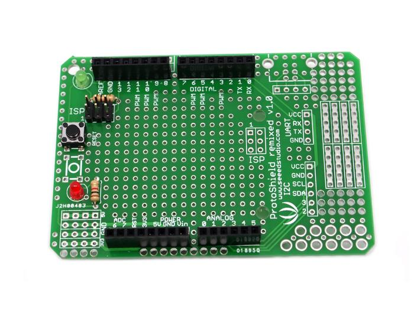
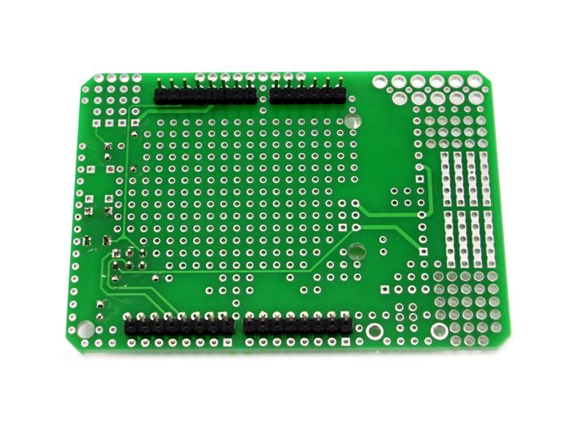
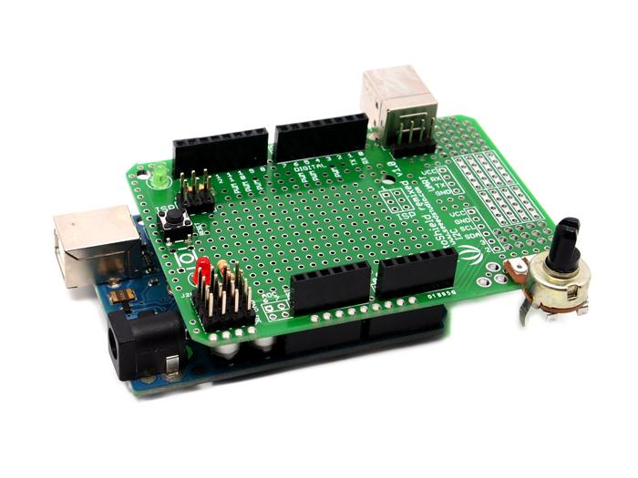

Build your own Arduino shield using the compact and flexible Proto Shield kit. Solder together a limitless range of circuits and reuse it in all your Arduino projects. A standard 0.1" prototyping grid accepts commonly used through-hole parts and chips. Basic components (resistors, potentiometer, LEDs, switches) are included to help you get started with your custom shield.
Model:STR104B2P


Step 1: Solder the Red LED to the holes in the Power Socket outline. Be sure to match the flat side of the LED with the outline on the board. Solder the green LED to the holes in the pin13 outline on the board, again, matching the flat side of the LED to the board outline. Solder two 1K resistors to R1 and R2. Solder Reset button and ISP header per the picture below. Note: The reset button is easier to install if you insert it before inserting the ISP header.

Step 2: Solder the female and male connectors. Note: solder ADC6 and ADC7 ONLY if your are using a Seeeduino. When using an Arduino, do NOT solder ADC6 and ADC7.


Step 3: Solder the USB connector to the USB port, and the potentiometer in the 80 mil holes. Solder the bottom left Power pins to suit your project.

Your finished kit should look similar to the picture above.
| Revision | Descriptions | Release |
|---|---|---|
| v1.0 | V1.0 Release | 2012/3/29 |